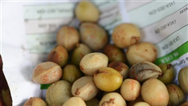

Specie: Vigna subterranea
Taxonomy: Fabaceae; Papilionoideae; 50 kb inversion clade; NPAAA clade; indigoferoid/millettioid clade; Phaseoleae; Vigna
Abbr: Vsu
Level: Chromosome
chromosome number: 2n=2X=22

Introduction: Vigna subterranea (common names: Bambara groundnut, Bambara nut, Bambara bean, Congo goober, earth pea, ground-bean, or hog-peanut) is a member of the family Fabaceae. Its name is derived from the Bambara tribe, who currently lives in Mali. The plant originated in West Africa. As a food and source of income, the Bambara groundnut is considered to be the third most important leguminous crop in those African countries where it is grown, after peanut and cowpea. The crop is mainly cultivated, sold and processed by women, and is, thus, particularly valuable for female subsistence farmers. Bambara groundnut represents the third most important grain legume in semi-arid Africa. It is resistant to high temperatures and is suitable for marginal soils where other leguminous crops cannot be grown. It is a low-impact crop. The entire plant is known for soil improvement because of nitrogen fixation. Vigna subterranea ripens its pods underground, much like the peanut (also called a groundnut). They can be eaten fresh or boiled after drying, and can be ground either fresh or dry to make puddings.
Distribution: Cameroon, Central African Repu, Chad, Nigeria, Sudan
Article Title: The draft genomes of five agriculturally important African orphan crops
Data source: The raw data from our genome project was deposited in the NCBI Sequence Read Archive database with Bioproject IDs PRJNA453822 and PRJNA474418. Assembly and annotation of the five genomes and other supporting data, including BUSCO results, are available in the GigaDB repository [85], and the data reported in this study are also available in the CNGB Nucleotide Sequence Archive (CNSA: https://db.cngb.org/cnsa; accession number CNP0000096). All genome annotations described here are also available at http://bioinformatics.psb.ugent.be/orcae/AOCC.